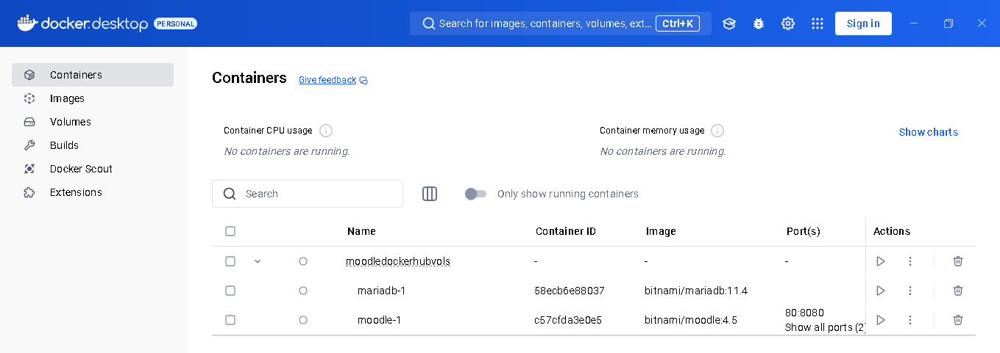
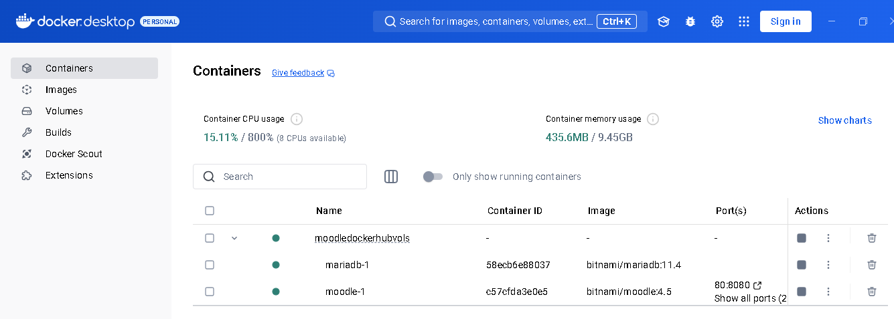
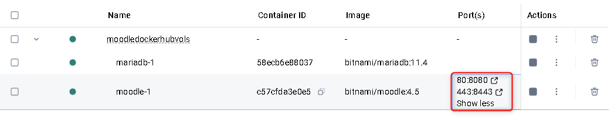
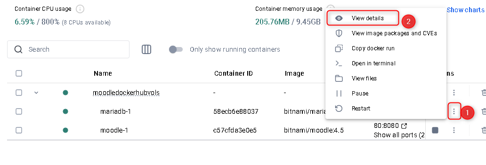
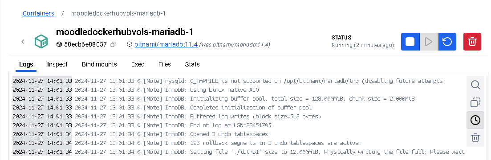

Instalación de una aplicación en Docker mediante docker-compose.yml
Instalación de Docker
Introducción a Docker
Docker es un proyecto de código abierto que automatiza el despliegue de aplicaciones dentro de contenedores de software, proporcionando una capa adicional de abstracción y automatización de virtualización de aplicaciones en múltiples sistemas operativos.
Docker es una plataforma de virtualización a nivel de sistema operativo que permite crear una aplicación y empaquetarla junto con sus dependencias y librerías en un contenedor que será capaz de ejecutarse en cualquier otra máquina que disponga de una capa para la gestión de dichos contenedores.
Una imagen es una especificación estática de lo que debería ser el contenedor en tiempo de ejecución, incluido el código de la aplicación y las configuraciones de tiempo de ejecución.
Un contenedor es la instanciación de una imagen, y puede haber múltiples instancias de un mismo contenedor.
Por ejemplo, a partir de una imagen que contenga un Ubuntu + Wordpress podríamos crear 3 contenedores ejecutándose de manera independiente:

Hay dos versiones de Docker, una libre y otra comercial. Nosotros trabajaremos con Docker Community Edition, que es la versión libre.
La virtualización clásica permite que sus sistemas operativos (Windows o Linux) se ejecuten simultáneamente en un solo sistema de hardware.
En la virtualización con contenedores las aplicaciones instaladas comparten el mismo kernel del sistema operativo y separan los procesos de las aplicaciones del resto del sistema.

Los contenedores permiten desplegar aplicaciones más rápido, arrancarlas y pararlas más rápido y aprovechar mejor los recursos de hardware.
Las máquinas virtuales nos permiten crear sistemas completos totalmente aislados, con mayor control sobre el entorno y mezclando sistemas operativos host y huésped.
Instalación de Docker Desktop
Para instalar Docker utilizaremos, descargándolo desde aquí: Docker Desktop
Ejecutar el instalador y seguir los pasos. Al finalizar la instalación, es posible que se nos pedirá reiniciar el sistema.
La instalación de Docker activa el Hyper-V de Windows en "activar y desactivar características de Windows", lo que provoca en ocasiones algún problema si también tenemos VirtualBox.
Docker se ejecuta en segundo plano y muestra un icono en la barra de herramientas.
Al abrir el programa veremos que tenemos Contenedores, Imágenes, Volúmenes y Redes.
En contenedores veremos los contenedores que tenemos creados y si están en marcha o no.
En imágenes veremos las imágenes que tenemos descargadas en nuestro repositorio local.
En volúmenes veremos los volúmenes que tenemos creados para guardar datos de los contenedores.
En redes veremos las redes creadas para que los contenedores puedan comunicarse entre sí.

Automatizar instalaciones con archivos de docker-compose.yml
Mejor usar WSL2
Es recomendable utilizar WSL2 para trabajar con Docker en Windows, ya que ofrece un mejor rendimiento y compatibilidad con las herramientas de desarrollo basadas en Linux. Se explica más adelante en este mismo documento.
En la mayoría de instalaciones necesitamos varios contenedores para ofrecer servicios en diferentes contenedores pero dependientes entre sí. Por ejemplo, para tener un servicio LAMP deberíamos tener un servidor apache con PHP y otro servidor con mysql.
En estos casos, es mucho mejor utilizar docker compose. Esta utilidad dispone de un script con extensión yml que configura estos servicios.
Por lo tanto, para instalar cualquier aplicación web con docker realizaremos los siguientes pasos:
-
Crear una carpeta para el proyecto
-
Copiar en la carpeta el correspondiente archivo docker-compose.yml según la aplicación que queramos instalar. Es posible que necesitemos crear alguna carpeta adicional para guardar los datos persistentes de la aplicación (bases de datos, archivos subidos, etc). Estas carpetas deben estar indicadas en el archivo docker-compose.yml. También puede ser necesario crear un archivo .env para definir variables de entorno.
-
Desde el terminal estando ubicados en la carpeta del proyecto donde esta ubicado docker-compose.yml, ejecutar el siguiente comando:
docker-compose up -dSi el archivo se llama de otra forma, deberemos indicar el nombre del archivo:
docker-compose -f archivo.yml up -d -
Comprobar en Docker que todo ha ido bien y está el servicio en marcha.

Para acceder a la aplicación podemos ver desde aquí la URL con el puerto que está utilizando. Normalmente será localhost:puerto.

Como trabajar con Docker en varios ordenadores con WSL2
üö´ PROHIBIDO
- ❌ Trabajar desde USB
- ❌ Borrar carpetas dentro de
data - ❌ Apagar PC sin
docker compose down - ❌ Cerrar Docker Desktop con Moodle activo
✅ Pasos en WSL con Ubuntu
Abrir Powershell y ejecutar:
- Comprobamos si Ubuntu está instalado:
wsl --list --verbose
- Si no está instalado, lo instalamos:
wsl --install -d Ubuntu
Al abrir Ubuntu por primera vez nos pedirá usuario y contraseña (solo para WSL)
Una vez instalado, podemos abrir Ubuntu desde el menú inicio de windows.
Suponemos que en C: tenemos la carpeta MoodlePortable con todo lo necesario para ejecutar Moodle en Docker:
- docker-compose.yml
- Carpeta data para guardar los datos, con las subcarpetas db, moodle y databd vacías inicialmente.
- archivo .env con las variables de entorno


Copiamos la carpeta MoodlePortable desde C: a nuestra carpeta de usuario en Ubuntu( modificarlo si las rutas son diferentes):
mkdir ~/Moodle
sudo cp -r /mnt/c/MoodlePortable/* ~/Moodle/
Nos movemos a la carpeta Moodle:
cd ~/Moodle
Comprobamos que tenemos todos los archivos con ls -la, y debe aparecer el docker-compose.yml, el archivo .env y la carpeta data.
Si no ha creado el archivo .env, lo creamos con nano .env y pegamos su contenido.
Y arrancamos los contenedores:
sudo docker compose up -d
Trabajamos con Moodle desde el navegador en la URL localhost:8080 o el puerto que hayamos indicado.
Cuando hayamos terminado de trabajar, paramos los contenedores:
sudo docker compose down
Y copiamos la carpeta MoodlePortable desde Ubuntu a C: para guardar los datos:
sudo rsync -av --progress ~/Moodle/ /mnt/c/MoodlePortable/
El uso de rsync es recomendable porque solo copiará los archivos que hayan cambiado, haciendo la copia mucho más rápida. Muestra el progreso de la copia, y es más robusto ante interrupciones.
Si no tienes rsync instalado, puedes instalarlo con:
sudo apt update
sudo apt install rsync
Cuidado con las rutas
Estas rutas pueden variar según la instalación de WSL y la ubicación de las carpetas. Fijaos bien en la unidad donde estáis trabajando y las rutas correctas.
Ejemplo de docker-compose.yml
Nextcloud Server
services:
db:
image: mariadb:latest # Para Raspberry 32 bits cambiar "mariadb:latest" por "yobasystems/alpine-mariadb:latest"
restart: unless-stopped
command: --transaction-isolation=READ-COMMITTED --log-bin=binlog --binlog-format=ROW
volumes:
- ./db:/var/lib/mysql
environment:
- MYSQL_ROOT_PASSWORD=nextcloud
- MYSQL_PASSWORD=nextcloud
- MYSQL_DATABASE=nextclouddb
- MYSQL_USER=nextcloud
ports:
- "33306:3306"
nextcloud:
image: nextcloud:latest
restart: unless-stopped
ports:
- "8900:80"
- "8943:443"
links:
- db
volumes:
- ./nextcloud/config:/var/www/html/config
- ./nextcloud/data:/var/www/html/data
- ./nextcloud/custom_apps:/var/www/html/custom_apps
- ./nextcloud/themes:/var/www/html/themes
environment:
- MYSQL_PASSWORD=nextcloud
- MYSQL_DATABASE=nextclouddb
- MYSQL_USER=nextcloud
- MYSQL_HOST=db
Moodle
services:
mariadb:
image: mariadb:10.11
container_name: moodle_mariadb
restart: unless-stopped
environment:
MARIADB_ROOT_PASSWORD: ${MARIADB_ROOT_PASSWORD}
MARIADB_DATABASE: ${MARIADB_DATABASE}
MARIADB_USER: ${MARIADB_USER}
MARIADB_PASSWORD: ${MARIADB_PASSWORD}
volumes:
# Base de datos persistente dentro del proyecto
- ./data/db:/var/lib/mysql
command: >
--innodb_buffer_pool_size=256M
--innodb_log_file_size=64M
--innodb_flush_log_at_trx_commit=2
--skip-name-resolve
moodle:
image: bitnamilegacy/moodle:latest
container_name: moodle_app
restart: unless-stopped
depends_on:
- mariadb
ports:
- "8080:8080"
environment:
MOODLE_SITE_URL: ${MOODLE_SITE_URL}
MOODLE_DATABASE_TYPE: mariadb
MOODLE_DATABASE_HOST: mariadb
MOODLE_DATABASE_PORT_NUMBER: 3306
MOODLE_DATABASE_NAME: ${MARIADB_DATABASE}
MOODLE_DATABASE_USER: ${MARIADB_USER}
MOODLE_DATABASE_PASSWORD: ${MARIADB_PASSWORD}
MOODLE_USERNAME: ${MOODLE_ADMIN_USER}
MOODLE_PASSWORD: ${MOODLE_ADMIN_PASS}
MOODLE_EMAIL: ${MOODLE_ADMIN_EMAIL}
# Ajustes conservadores (equipos lentos)
PHP_MEMORY_LIMIT: 384M
PHP_MAX_EXECUTION_TIME: 300
PHP_POST_MAX_SIZE: 64M
PHP_UPLOAD_MAX_FILESIZE: 64M
volumes:
# Moodle y moodledata dentro del proyecto
- ./data/moodle:/bitnami/moodle
- ./data/moodledata:/bitnami/moodledata
En un archivo .env podemos definir las variables de entorno:
MOODLE_SITE_URL=http://localhost:8080
MARIADB_ROOT_PASSWORD=RootPass
MARIADB_DATABASE=moodle
MARIADB_USER=moodle
MARIADB_PASSWORD=MoodlePass
MOODLE_ADMIN_USER=admin
MOODLE_ADMIN_PASS=Admin1234!
MOODLE_ADMIN_EMAIL=admin@example.com
Ver logs de un contenedor
Si el contendedor no está en marcha al darle al play, podemos ver los logs desde los 3 puntos de la derecha del contenedor.

Veremos en el log que error ha habido si no ha arrancado correctamente.
